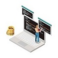

Todos los servicios
Arquitectura
El Arquitecto de software es un experto, que dicta estándares técnicos, encargado de
desarrollar las propuestas para crear plataformas digitales, desde la definición de la
estructura, capacidad de los servidores, SO, todos los prerrequisitos necesarios para su
correcto funcionamiento.
Soporte
El personal del soporte técnico ayuda a los diferentes clientes a solucionar problemas de
software complejos además de mantener productivas las mismas, deben tener la capacidad de
analizar los problemas, realizar seguimientos y brindar solución tanto temporales como
permanentes, para este cargo es necesario contar con una comunicación asertiva con el
cliente final.
Funcional
El soporte funcional es encargado de mantener los procesos de las plataformas conforme a su
diseño, cada función debe ser ejecutada de acuerdo con su flujo, de igual forma que el
soporte técnico debe contar con una excelente comunicación con el cliente, además de
conocimiento de diferentes lenguajes de programación.